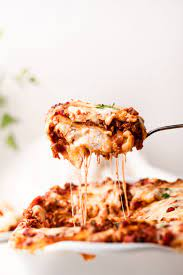

Lasagna

Description
Lasagna (US: /ləˈzɑːnjə/, also UK: /ləˈzænjə/,[1] Italian: [laˈzaɲɲe] also known as lasagne, Italian: [laˈzaɲɲa]) is a type of pasta, possibly one of the
oldest types,[2] made of very wide, flat sheets. Either term can also refer to an Italian dish made of stacked layers of lasagna alternating with fillings
such as ragù (ground meats and tomato sauce), vegetables, cheeses (which may include ricotta, mozzarella, and parmesan), and seasonings and spices, like
Italian seasoning, such as garlic, oregano and basil.[3] The dish may be topped with grated cheese, which becomes melted after baking. Typically cooked
pasta is assembled with the other ingredients and then baked in an oven. The resulting baked pasta is cut into single-serving square portions.
Ingredients
- 4 boneless skinless chicken breasts, cut into 1/4-inch strips
- ½ cup lime juice
- 2 (1 ounce) packets taco seasoning mix (such as Old El Paso®)
- 1 ½ cups shredded mozzarella cheese, divided
- 1 cup sour cream
- 1 cup salsa
- salt and ground black pepper to taste
- 1 (8 ounce) package no-boil lasagna noodles, or to taste
Steps
- Combine chicken, lime juice, and taco seasoning in a large bowl. Stir to make sure chicken is evenly covered.
- Cook chicken mixture over medium heat until firm, about 15 minutes.
- Mix 1/2 cup mozzarella cheese, sour cream, and salsa in a bowl. Season with salt and pepper.
- Put a few spoonfuls of the sour cream mixture in the bottom of a 9x9-inch baking dish. Layer noodles and chicken on top.
Cover with remaining 1 cup mozzarella cheese.
- Bake in the preheated oven until noodles are tender and cheese is melted, about 1 hour.